Chapter 3: Memory & Storage¶
A processor is only as fast as the data it can reach, so this chapter follows data from the tiny caches inside a CPU, through DRAM and new memory links like CXL, down to SSDs, hard drives, tape and networked storage. You will learn how each layer works, the standards and numbers that matter in 2026, and how file systems, RAID and backups keep data safe. By the end you will be able to choose the right memory and storage for a laptop, a server or an AI cluster and explain why.
3.1 The Memory Hierarchy¶
A computer stores data in several layers, from tiny, ultra-fast storage inside the processor to huge, slow storage such as hard drives, tape and the cloud. Faster layers are smaller and cost more per byte, so the computer keeps what it needs right now close to the processor and everything else further away. This stack of layers is called the memory hierarchy.
Think of it like…
A chef keeps the ingredient being chopped in hand, a few on the worktop, more in the fridge, bulk stock in the pantry and rarely used items at a warehouse across town.
Real-world example
Sam, a student game developer, rewrites his particle simulation to keep all positions in one continuous array instead of scattered objects. Each 64-byte cache line now carries 16 floats he is about to use, so most reads hit the L1 cache in about 1 ns rather than DRAM at around 100 ns. His frame time drops from 28 ms to 9 ms without changing the maths at all. A single read from his NVMe SSD would have cost roughly 100 µs, a thousand times worse again.
How it works¶
- The CPU works on values held in registers, which it can use within a single clock cycle.
- If the data is not in a register, the CPU checks the L1, then L2, then L3 cache, each bigger but slower.
- A miss in every cache goes out to main memory (DRAM), roughly 100 times slower than L1.
- Data not in RAM must be fetched from an SSD or hard drive, thousands to millions of times slower.
- Hardware and the operating system keep recently used and nearby data in the fast layers, betting on locality.
Who uses it
Programmers, game and database developers, performance engineers and HPC specialists all design their code and systems around the hierarchy.
Key takeaway
Memorise the rough ladder: register under 1 ns, L1 about 1 ns, DRAM about 100 ns, NVMe SSD about 100 µs, hard drive about 10 ms.
Going deeper
- At 4 GHz an L1 hit costs about 4-5 cycles, a DRAM access a few hundred cycles and an NVMe read hundreds of thousands of cycles, so one miss can outweigh thousands of instructions.
- Average memory access time combines tiers: AMAT = hit time + miss rate × miss penalty. Small changes in miss rate matter because each lower level's penalty is so large.
- Data moves between tiers in fixed units: 64-byte cache lines between caches and DRAM, 4 KiB pages between DRAM and storage, and large blocks or objects to archives.
- Who manages each layer tells you what you can tune: hardware runs the caches, the OS runs the page cache and swap, and software or administrators place data on storage tiers.
- Bandwidth shrinks down the hierarchy too: L1 can feed one core hundreds of GB/s, a 12-channel DDR5 socket about 600 GB/s, an NVMe SSD 7-14 GB/s and a hard drive about 0.3 GB/s.
- AI systems add extra tiers: on-chip SRAM, stacked HBM beside the accelerator, CPU DDR, CXL memory and NVMe flash, with serving software offloading KV cache between them.
- Energy follows the same ladder: fetching a value from off-chip DRAM costs hundreds of times more energy than a floating-point add on it, so keeping data close also saves power.
Common mistakes & misconceptions
- Assuming more RAM always speeds things up: once the working set fits, extra RAM only helps as page cache, and the bottleneck may be elsewhere.
- Treating storage as memory: swap on even a fast SSD is roughly a thousand times slower than DRAM, so heavy swapping cripples performance.
- Believing data is saved once write() returns: it may still sit in the OS page cache or the drive's cache until flushed with fsync.
- Mixing up GB and GiB, or bits and bytes per second, when comparing tiers; always check units before calculating a speed-up.
Try it: See your own CPU's cache sizes and cache-line size¶
lscpu | grep -i cache # Linux: L1d, L1i, L2, L3 sizes
getconf LEVEL1_DCACHE_LINESIZE # Linux: cache line size (usually 64)
sysctl hw.l1dcachesize hw.l2cachesize # macOS
Get-CimInstance Win32_Processor | Select-Object Name,L2CacheSize,L3CacheSize # Windows PowerShell (KB)
Key chips, architectures, standards, tools & concepts¶
| Name | What it does | Example |
|---|---|---|
| Bandwidth General performance concept · Metric · Current · Beginner |
How much data a memory or storage layer can deliver per second, usually measured in GB/s. | One DDR5-6400 channel moves about 51 GB/s, while a PCIe 5.0 x4 SSD manages roughly 14 GB/s. |
| Volatile vs non-volatile memory General hardware concept · Concept · Current · Beginner |
Volatile memory (SRAM, DRAM) loses its contents without power; non-volatile storage (flash, disks, tape) keeps data when switched off. | Unsaved work in RAM vanishes in a power cut, but the document saved to the SSD is still there. |
| Main memory (RAM) DRAM chips from SK hynix, Samsung, Micron and others · Component · Current · Beginner |
The computer's working memory, made of DRAM, that holds running programs and their data while the CPU uses them. | Opening 40 browser tabs can use 8 GB of RAM; when it fills up, the OS starts swapping to disk. |
| Storage tiering (hot, warm, cold) Storage industry practice · Concept · Current · Intermediate |
Placing frequently used data on fast, costly media and rarely used data on cheap, slow media such as HDD, tape or archive cloud. | A video site keeps this week's uploads on NVMe SSDs, last year's on hard drives and old raw footage on tape. |
| Memory wall Term from Wulf and McKee, 1995 · Concept · Current · Advanced |
The growing gap between how fast processors compute and how fast memory can feed them data. | AI accelerators add stacked HBM memory because their maths units would otherwise sit idle waiting for data. |
| Primary, secondary and tertiary storage Classic computer-science classification · Concept · Current · Beginner |
Primary storage is memory the CPU addresses directly (registers, cache, RAM); secondary is drives; tertiary is removable or robotic archive media. | Your laptop's RAM is primary storage, its SSD secondary, and the company's robotic tape library tertiary storage. |
| Byte-addressable vs block-addressable General hardware and OS concept · Concept · Current · Beginner |
RAM is read by CPU load and store instructions down to single bytes; drives are read through the OS in whole blocks, usually 4 KiB. | Changing one byte of a file on an SSD still means reading and rewriting at least one whole 4 KiB block. |
| Cost per gigabyte Market prices (vary strongly over time) · Metric · Current · Beginner |
Price per stored gigabyte falls sharply down the hierarchy: DRAM costs tens of times more than SSD, which costs several times more than HDD. | Upgrading a server from 256 GB to 512 GB of RAM can cost as much as tens of terabytes of hard-disk capacity. |
| Working set Peter Denning (1968) · Concept · Current · Intermediate |
The code and data a program actively uses over a short period; speed drops sharply once it no longer fits in a faster tier. | A database whose 40 GB hot working set fits in 64 GB of RAM is fast; when it grows to 80 GB, queries keep hitting the SSD. |
| Page cache (buffer cache) Linux, Windows and macOS kernels · Technology · Current · Intermediate |
Spare RAM the operating system fills with recently read or written file data, so repeat reads skip the drive entirely. | Searching a 2 GB log twice, the second run is far faster; Linux's free -h shows that memory as buff/cache. |
| Durability and fsync POSIX fsync(); Windows FlushFileBuffers · Concept · Current · Intermediate |
Writes usually land in volatile caches first; data is only safe once flushed to non-volatile storage, for example by calling fsync. | A payments database calls fsync before confirming a transfer, so a power cut a millisecond later cannot lose it. |
| Scratchpad memory Used in GPUs (shared memory), DSPs, AI accelerators and microcontrollers · Component · Current · Intermediate |
Small, fast on-chip SRAM that software manages explicitly, unlike an automatic cache, giving predictable timing and no wasted fetches. | A GPU kernel copies a tile into shared memory, and an AI chip's compiler decides exactly which weights sit in on-chip SRAM. |
3.2 SRAM, DRAM and Memory Modules¶
SRAM and DRAM are the two main kinds of electronic working memory. SRAM is fast and needs no refreshing but takes up a lot of chip space, so it is used for caches; DRAM stores each bit as a tiny electric charge that slowly leaks away, so it must be refreshed constantly, but it is cheap and dense enough for gigabytes of main memory. DRAM chips are mounted on modules (sticks) that plug into the motherboard, and servers add error-correcting memory to catch mistakes.
SRAM vs DRAM
| SRAM | DRAM | |
|---|---|---|
| Cell | 6 transistors (latch) | 1 transistor + 1 capacitor |
| Refresh | None while powered | Every row within 32-64 ms |
| Access time | About 1-10 ns on-chip | About 80-120 ns from the CPU |
| Density / cost | Low density, high cost | High density, low cost |
| Typical size | KB to hundreds of MB | GB to TB |
| Built on | Same logic process as CPU | Specialised DRAM process |
| Used for | Caches, registers, scratchpads | Main memory, GDDR, HBM |
SRAM buys speed with area; DRAM buys density with refresh and slower access.
Think of it like…
SRAM is like a light switch that stays where you put it; DRAM is like a bucket with a tiny hole that someone must top up every few milliseconds.
Real-world example
Tomás builds a small server for Brightwater Analytics, a fictional market-research firm. He picks a server board with 8 memory channels and fills each with one 64 GB DDR5 RDIMM, giving 512 GB with ECC protection. A month later the system log reports two corrected single-bit errors on one DIMM, so he swaps it during planned maintenance before it can cause a crash. On a desktop with consumer UDIMMs without ECC, those errors could have silently corrupted data.
How it works¶
- An SRAM cell uses about six transistors wired as a latch that holds a 0 or 1 while powered.
- A DRAM cell uses one transistor and one capacitor; a charged capacitor means 1, an empty one means 0.
- DRAM cells are arranged in rows and columns inside banks; reading opens a whole row into a row buffer.
- Because charge leaks, the memory controller refreshes every row, typically within a 32-64 ms window.
- Chips are grouped into ranks on a module (DIMM), and modules sit on channels wired to the CPU's memory controller.
- ECC adds extra bits so the controller can correct single-bit errors and detect worse ones.
Who uses it
Hardware engineers, server and data-centre technicians, PC builders and system administrators choose and troubleshoot memory every day.
Key takeaway
Populate every memory channel evenly; a server with half its channels empty can lose close to half its memory bandwidth.
Going deeper
- Reading DRAM activates a whole row of thousands of bits into sense amplifiers (the row buffer); further reads from that open row are much faster than closing it and opening another.
- DDR5 splits each DIMM into two independent 32-bit subchannels, or 40-bit with ECC, so a server ECC RDIMM carries 80 data bits and keeps more requests in flight.
- Peak bandwidth per socket = channels × transfer rate × 8 bytes: twelve channels of DDR5-6400 give about 614 GB/s, which is why server platforms keep adding channels.
- Server ECC goes beyond single-bit correction: Chipkill or SDDC-style schemes survive a whole failed DRAM chip, and patrol scrubbing fixes errors in the background before they accumulate.
- Two DIMMs per channel usually lowers the supported memory speed, so architects trade capacity against bandwidth when specifying servers.
- Rowhammer defences evolved from Target Row Refresh in DDR4 to Refresh Management and Per-Row Activation Counting (PRAC) in DDR5, which counts activations and refreshes victim rows.
Common mistakes & misconceptions
- Thinking DDR5's on-die ECC makes consumer memory 'ECC memory': it only fixes errors inside the chip, not on the bus, and reports nothing to the OS.
- Mixing RDIMMs with UDIMMs, or DDR4 with DDR5: they are electrically incompatible, and the slots are keyed differently.
- Judging memory by MT/s alone: real latency in nanoseconds depends on both the transfer rate and the CAS latency.
- Leaving server memory channels empty: bandwidth scales with populated channels, so spread DIMMs evenly across all of them.
Try it: List the memory modules installed in your machine¶
Get-CimInstance Win32_PhysicalMemory | Select-Object BankLabel,Capacity,Speed,Manufacturer,PartNumber # Windows PowerShell (wmic is deprecated)
sudo dmidecode --type memory | grep -E 'Size|Type:|Speed|Locator' # Linux
free -h # Linux: total/used RAM
Key chips, architectures, standards, tools & concepts¶
| Name | What it does | Example |
|---|---|---|
| SRAM (static RAM) Built into CPUs, GPUs and SoCs by all chipmakers · Technology · Current · Beginner |
Fast memory made from about six transistors per bit that holds data without refresh; large per bit, so used for caches. | A big server CPU's L3 cache, which can reach hundreds of megabytes across chiplets, is built from SRAM. |
| DRAM (dynamic RAM) SK hynix, Samsung, Micron, CXMT and others; standards by JEDEC · Technology · Current · Beginner |
Dense, low-cost memory storing each bit as charge in a tiny capacitor, needing regular refresh; used for main memory. | A 16 GB laptop stick contains billions of DRAM capacitors, each holding one bit of your open files. |
| DRAM refresh JEDEC DRAM standards · Concept · Current · Intermediate |
Periodically reading and rewriting every DRAM row before its charge leaks away, typically every 32-64 ms, briefly blocking access. | Server DRAM running very hot may refresh twice as often, slightly reducing available bandwidth. |
| ECC memory Memory controllers in Intel Xeon, AMD EPYC and other server CPUs · Technology · Current · Beginner |
Memory with extra check bits that lets the controller fix single-bit errors and detect multi-bit ones, preventing silent corruption. | A bank's database servers use ECC RDIMMs so a cosmic-ray bit flip never alters an account balance. |
| On-die ECC (DDR5) JEDEC JESD79-5 (DDR5) · Technology · Current · Intermediate |
Error correction inside each DDR5 chip that fixes internal bit errors; it does not replace full system-level ECC on servers. | A gamer's non-ECC DDR5 kit still has on-die ECC, but errors on the bus to the CPU go unchecked. |
| Channel, rank and bank JEDEC DRAM organisation · Concept · Current · Intermediate |
A channel is an independent path to memory; a rank is a set of chips answering together; banks are independent arrays inside each chip. | A 12-channel server CPU with one 2-rank RDIMM per channel can keep many banks busy in parallel. |
| UDIMM JEDEC module standard · Component · Current · Beginner |
Unbuffered DIMM: the standard desktop memory stick where the CPU talks to the DRAM chips directly; ECC versions exist. | A home PC uses two 16 GB DDR5 UDIMMs in dual-channel mode. |
| SO-DIMM JEDEC module standard · Component · Current · Beginner |
Small Outline DIMM, a shorter memory module used in laptops, mini PCs and some embedded boards. | Upgrading a mini PC from 8 GB to 32 GB means swapping its DDR5 SO-DIMM sticks. |
| RDIMM JEDEC module standard · Component · Current · Intermediate |
Registered DIMM, with a register clock driver chip that buffers commands so servers can use more and larger modules reliably. | Most rack servers use ECC DDR5 RDIMMs of 32-128 GB each. |
| LRDIMM JEDEC module standard · Component · Legacy · Advanced |
Load-Reduced DIMM, which also buffers data lines to support very high capacities; common with DDR4, rarer with DDR5. | An older DDR4 database server reached 3 TB of RAM using 128 GB LRDIMMs. |
| MRDIMM JEDEC DDR5 MRDIMM standard; supported by Intel Xeon 6 · Component · Emerging · Advanced |
Multiplexed-Rank DIMM that reads two ranks at once through data buffers, roughly doubling module bandwidth; 8800 MT/s now, Gen 2 targets 12800. | An HPC centre picks MRDIMM-8800 for its Xeon 6 nodes to speed up memory-bound weather simulations. |
| CAMM2 and LPCAMM2 JEDEC JESD318 (CAMM2) · Component · Emerging · Intermediate |
Compression-Attached Memory Modules: thin, flat modules screwed onto the board, for DDR5 or LPDDR5X, replacing soldered laptop memory. | A workstation laptop with an LPCAMM2 module can be upgraded from 32 GB to 64 GB instead of being stuck. |
| Rowhammer Research by Kim et al., 2014; JEDEC mitigations such as PRAC in DDR5 · Concept · Current · Advanced |
A flaw where repeatedly activating one DRAM row can flip bits in neighbouring rows, a reliability and security risk. | Security researchers showed Rowhammer could escalate privileges, prompting refresh-based defences in newer DRAM. |
| PMIC and SPD hub JEDEC JESD79-5 (DDR5) module standards · Component · Current · Advanced |
DDR5 moves power regulation (PMIC) onto each module, and an SPD chip stores the module's size, speed and timing profile. | The BIOS reads each stick's SPD at boot to set speed; a faulty PMIC can stop one DIMM powering up. |
| DRAM timings (CL-tRCD-tRP-tRAS) JEDEC speed bins; module SPD, XMP and EXPO profiles · Metric · Current · Intermediate |
Delays, in clock cycles, between DRAM commands; CL (CAS latency) is the wait from a column read command to the first data. | DDR5-6000 CL30 gives 30 ÷ 3000 MHz = 10 ns true latency, the same as DDR4-3200 CL16. |
| Integrated memory controller (IMC) Inside Intel, AMD, Arm-based and Apple processors · Component · Current · Intermediate |
Logic on the processor that schedules DRAM commands, refresh, ECC and channel interleaving; it decides which speeds and capacities work. | A desktop CPU's IMC may run four DDR5 sticks at a lower speed than two, because extra modules load each channel. |
3.3 DRAM Generations and Standards (DDR, LPDDR, GDDR, HBM)¶
DRAM comes in families tuned for different jobs: DDR for PCs and servers, LPDDR for low-power phones and laptops, GDDR for graphics cards and HBM, tall stacks of chips placed beside AI accelerators. Each new generation moves more data per second while using less energy per bit. The rules for each family are published by an industry body called JEDEC so chips from different makers work together.
Think of it like…
The families are like vehicles for different roads: DDR is a family car, LPDDR an efficient scooter, GDDR a sports car, and HBM a multi-lane motorway built right next to the factory.
Real-world example
Aisha compares three chips for a university project. A desktop with two DDR5-6400 channels gets about 2 × 6400 MT/s × 8 bytes ≈ 102 GB/s. A graphics card with a 256-bit GDDR7 bus at 28 Gbps gets 256 × 28 ÷ 8 = 896 GB/s. An AI accelerator with eight HBM3E stacks at about 1.2 TB/s each approaches 10 TB/s, which explains why AI chips use HBM despite its high cost.
How it works¶
- JEDEC committees, made of memory, CPU and GPU makers, agree a standard for each new generation.
- Memory makers (mainly SK hynix, Samsung and Micron) design chips that meet or exceed it.
- Speed is quoted in MT/s (megatransfers per second) or Gbps per pin; bandwidth = transfer rate × bus width in bytes.
- DDR and LPDDR use narrow fast buses, GDDR uses wider faster ones, and HBM uses very wide (1024- to 2048-bit) buses at moderate speed.
- HBM stacks DRAM dies vertically using through-silicon vias and sits on an interposer beside the processor.
- Newer generations add features such as on-die ECC, PAM signalling and lower voltages.
Who uses it
PC builders, hardware and GPU engineers, AI infrastructure teams and memory industry analysts track these standards closely.
Key takeaway
Bandwidth = transfer rate × bus width ÷ 8; practise this sum, because interviewers love asking why HBM beats DDR for AI.
Going deeper
- Peak bandwidth = data rate per pin × bus width ÷ 8. DDR uses 64-bit channels, GDDR uses 32-bit chips ganged into 128-512-bit buses, and HBM uses 1024-bit (HBM3E) or 2048-bit (HBM4) stacks.
- Signalling changed to reach higher speeds: DDR5 and LPDDR5 use two-level NRZ, GDDR6X uses four-level PAM4, and GDDR7 uses three-level PAM3, sending three bits every two cycles.
- HBM stacks 8, 12 or 16 DRAM dies on a base die using through-silicon vias, and needs 2.5D packaging such as TSMC CoWoS, a long-running supply bottleneck for AI chips.
- Capacity per HBM stack grew from 16-24 GB (HBM3) to 36 GB (12-high HBM3E) and up to 64 GB for 16-high HBM4, which is why accelerator memory rose from 80 GB to 288 GB.
- LPDDR saves power with low voltages, deep sleep states and short traces, but is normally soldered; CAMM2, LPCAMM2 and SOCAMM modules bring replaceability back.
- Memory is a cyclical commodity: in 2025-26 strong AI demand for HBM and server DRAM tightened supply and raised prices for PC and phone memory as well.
Common mistakes & misconceptions
- Comparing MT/s across families: LPDDR, DDR, GDDR and HBM use different bus widths, so compare bandwidth in GB/s instead.
- Assuming a DDR5 motherboard accepts DDR4 sticks, or the reverse: the slots are keyed differently and the controllers are incompatible.
- Treating XMP or EXPO speeds as guaranteed: they are overclocks, and stability depends on the CPU's memory controller and the board.
- Believing HBM uses a special kind of memory cell: it is ordinary DRAM, stacked and connected through an extremely wide interface.
Try it: Work out peak memory bandwidth in Python¶
def bw_gbs(mts, bus_bits):
return mts * 1e6 * bus_bits / 8 / 1e9
print('DDR5-6400, 1 channel :', bw_gbs(6400, 64), 'GB/s') # ~51.2
print('GDDR7 28 Gbps, 256-bit:', bw_gbs(28000, 256), 'GB/s') # ~896
print('HBM4 8 Gbps, 2048-bit :', bw_gbs(8000, 2048), 'GB/s') # ~2048 per stack
Key chips, architectures, standards, tools & concepts¶
| Name | What it does | Example |
|---|---|---|
| JEDEC JEDEC Solid State Technology Association · Organisation · Current · Beginner |
The standards body that publishes the DRAM, flash and module specifications, including DDR, LPDDR, GDDR and HBM. | Every DDR5 stick you buy follows JEDEC's JESD79-5 family of documents for timings and signals. |
| DDR4 JEDEC JESD79-4 (2012); products from 2014 · Standard · Legacy · Beginner |
Fourth-generation DDR SDRAM at 1600-3200 MT/s and 1.2 V, still common in older PCs and servers. | A 2019 office PC with two DDR4-3200 sticks is still in daily use but cannot take DDR5. |
| DDR5 JEDEC JESD79-5 (2020); JESD79-5C (2024) extends to 8800 MT/s · Standard · Current · Beginner |
Current main memory for PCs and servers: two 32-bit subchannels per module, on-die ECC and module power management, from 4800 MT/s. | A new gaming PC uses DDR5-6000; a 2026 server runs RDIMMs at 6400 MT/s or faster. |
| DDR6 JEDEC (in development) · Standard · Emerging · Intermediate |
The next DDR generation, still being finalised by JEDEC; 2026 industry reports put first commercial products around 2028. | Server planners note DDR6 on roadmaps but buy DDR5 platforms for 2026 deployments. |
| LPDDR5 and LPDDR5X JEDEC JESD209-5 family · Standard · Current · Intermediate |
Low-power DRAM for phones, tablets and thin laptops, usually soldered beside the processor; LPDDR5X reaches about 10.7 Gbps per pin. | A flagship 2025 smartphone uses 12 GB of LPDDR5X to run on-device AI models. |
| LPDDR6 JEDEC JESD209-6 (July 2025) · Standard · Emerging · Intermediate |
Low-power DRAM standard JESD209-6 (July 2025): 24-bit channels split into two 12-bit sub-channels, up to 14.4 Gbps per pin. | LPDDR6 appears first in top-tier phone and laptop chips from late 2026, while mainstream devices stay on cheaper LPDDR5X. |
| GDDR6 and GDDR6X JEDEC JESD250 (GDDR6); GDDR6X by Micron with NVIDIA · Standard · Current · Intermediate |
Graphics DRAM with wide, fast buses for GPUs; GDDR6X is a Micron-only variant using PAM4 signalling. | A mid-range graphics card uses eight GDDR6 chips on a 256-bit bus for about 450-500 GB/s. |
| GDDR7 JEDEC JESD239 (March 2024) · Standard · Current · Intermediate |
Graphics DRAM using PAM3 signalling; first products run about 28-32 Gbps per pin, and the standard allows up to 48 Gbps. | NVIDIA's GeForce RTX 50-series cards were among the first products shipped with GDDR7 memory. |
| HBM (High Bandwidth Memory) JEDEC JESD235/JESD238/JESD270 families · Technology · Current · Intermediate |
Several DRAM dies stacked vertically and linked by through-silicon vias, placed beside a GPU on an interposer for huge bandwidth. | AI accelerators surround the main chip with six to eight HBM stacks inside one package. |
| HBM3E SK hynix, Samsung, Micron (extension of JEDEC HBM3, JESD238) · Standard · Current · Advanced |
Enhanced HBM3 running about 9-10 Gbps per pin on a 1024-bit bus, giving roughly 1.2 TB/s and up to 36 GB per 12-high stack. | Many 2024-2025 AI GPUs use six to eight HBM3E stacks, giving well over 100 GB of memory each. |
| HBM4 JEDEC JESD270-4 (April 2025) · Standard · Emerging · Advanced |
Next HBM generation with a 2048-bit interface, 32 channels and up to about 2 TB/s per stack; mass production began in 2026. | NVIDIA's Rubin-generation GPUs, launching in 2026, are built around HBM4 from Samsung, SK hynix and Micron. |
| MT/s vs MHz Memory industry convention · Concept · Current · Beginner |
DDR memory transfers data twice per clock, so DDR5-6400 means 6400 megatransfers per second on a 3200 MHz clock. | Task Manager may show '3200 MHz' for a DDR5-6400 kit; both numbers describe the same speed. |
| XMP and EXPO Intel (XMP) and AMD (EXPO) · Technology · Current · Beginner |
Overclocking profiles stored on memory modules so the BIOS can run them faster than JEDEC defaults with one setting. | A gamer enables EXPO in the BIOS so a DDR5-6000 kit stops running at the default 4800 MT/s. |
| DRAM manufacturers SK hynix, Samsung Electronics, Micron Technology (plus CXMT and others) · Organisation · Current · Beginner |
Three companies make most of the world's DRAM and almost all HBM, so their output strongly affects memory prices. | When AI demand for HBM surged, DRAM makers shifted capacity and PC memory prices rose. |
| SOCAMM and SOCAMM2 Developed with NVIDIA; made by Micron, Samsung and SK hynix; SOCAMM2 being standardised at JEDEC · Component · Emerging · Advanced |
Compact, replaceable LPDDR5X modules for AI servers, giving low-power memory without soldering it beside the CPU. | AI server boards use SOCAMM modules so large pools of LPDDR5X can be upgraded or replaced instead of being soldered down. |
3.4 Virtual Memory, Paging and the TLB¶
Virtual memory gives every program its own private, tidy address space, as if it had the whole memory to itself. The operating system and a hardware unit in the CPU translate these pretend (virtual) addresses into real (physical) ones, page by page. This keeps programs from reading each other's data, lets memory be shared safely and lets the system borrow disk space when RAM runs short.

Think of it like…
Each program has its own flat numbers 1, 2, 3, while the building manager keeps a directory saying which real room in which building each flat number maps to.
Real-world example
Lena runs a Python script that allocates a 10 GB array on a laptop with 16 GB of RAM. Linux hands out virtual pages instantly but only finds real memory when each 4 KiB page is first touched, triggering a minor page fault. When she also opens a video editor, RAM fills, so the kernel swaps idle pages to the SSD and everything slows down sharply. Running `free -h` and `vmstat 1` shows swap rising, so she processes the data in chunks instead.
How it works¶
- Each process uses virtual addresses; the CPU's MMU splits them into a page number and an offset.
- The MMU first checks the TLB, a small cache of recent translations; a hit takes about a cycle.
- On a TLB miss, hardware walks the multi-level page table in memory to find the physical frame.
- If the page is not in RAM, a page fault hands control to the OS, which loads it (from disk or as a fresh zeroed page).
- When RAM is short, the OS evicts rarely used pages to swap and updates the page tables.
- Permissions bits in each entry (read, write, execute, user/kernel) enforce isolation and security.
Who uses it
Operating-system and kernel developers, system administrators, database tuners and security engineers work with virtual memory daily.
Key takeaway
Know the default page size (4 KiB on x86-64), what a TLB miss and a page fault are, and why huge pages help large-memory workloads.
Going deeper
- x86-64 four-level paging translates 48-bit virtual addresses (256 TiB); five-level paging (LA57) extends this to 57 bits (128 PiB). Each level uses 9 address bits to index 512 entries.
- One 2 MiB huge-page TLB entry covers 512 times the memory of a 4 KiB entry, and a 1 GiB entry covers 262,144 times, which is why huge pages help big in-memory workloads.
- Minor faults, such as first touch of a fresh zero page, cost around a microsecond; major faults needing SSD reads cost tens to hundreds of microseconds, and milliseconds on hard disks.
- Virtual machines add a second translation: guest virtual to guest physical to host physical, done in hardware by Intel EPT or AMD NPT, which makes each TLB miss more expensive.
- Arm64 supports 4 KiB, 16 KiB and 64 KiB base pages; macOS on Apple silicon uses 16 KiB pages, a common surprise when porting low-level software.
- Security features build on page tables: NX/XD stops code running from data pages, and SMEP/SMAP stop the kernel executing or touching user pages unexpectedly.
Common mistakes & misconceptions
- Thinking virtual memory just means 'using disk as RAM': its main job is isolation and address translation; swapping is only one optional use.
- Confusing a TLB miss with a page fault: a TLB miss is resolved by hardware walking tables, while a page fault traps into the OS.
- Reading a large VIRT or VSZ value in top as real memory use: reserved address space is not RAM; check RSS or PSS instead.
- Enabling Transparent Huge Pages everywhere: some databases advise disabling THP because background compaction can cause latency spikes.
Try it: Inspect page size, memory, swap and huge pages on Linux¶
getconf PAGESIZE # usually 4096 bytes
free -h # RAM and swap usage
grep -i huge /proc/meminfo # huge page settings
cat /sys/kernel/mm/transparent_hugepage/enabled
vmstat 1 5 # 'si'/'so' columns = swap in/out
Get-CimInstance Win32_PageFileUsage # Windows PowerShell: page file size
Key chips, architectures, standards, tools & concepts¶
| Name | What it does | Example |
|---|---|---|
| Virtual memory Operating systems (Linux, Windows, macOS) with CPU hardware support · Concept · Current · Beginner |
Giving each process a private address space that the OS and hardware map onto real RAM or disk, page by page. | Two programs can both use address 0x400000 without clashing because each maps to different physical memory. |
| Physical vs virtual address Computer architecture concept · Concept · Current · Beginner |
A virtual address is what the program sees; a physical address is the real location in RAM chips after translation. | A debugger shows a pointer of 0x7ffd1234abcd, but the data actually sits in a frame near the 3 GB mark of RAM. |
| MMU (Memory Management Unit) Built into CPUs (x86-64, Arm, RISC-V) · Component · Current · Intermediate |
The hardware in the CPU that translates virtual addresses to physical ones and checks access permissions on every memory access. | When a buggy C program writes to a read-only page, the MMU raises a fault and Linux reports 'Segmentation fault'. |
| Page and page frame OS and ISA convention; 4 KiB default on x86-64 · Concept · Current · Beginner |
Memory is managed in fixed-size blocks: a page in virtual memory maps to a same-sized frame in physical RAM. | A 1 MiB buffer occupies 256 pages of 4 KiB, which may be scattered anywhere in physical RAM. |
| Page table Defined by each ISA (x86-64 4- or 5-level, Arm, RISC-V Sv39/Sv48) · Concept · Current · Intermediate |
The hardware-defined tree of tables, filled in by the OS, that the MMU walks to find each virtual page's physical frame and permissions. | x86-64 uses four levels to translate 48-bit addresses, or five levels for 57-bit addresses on big servers. |
| TLB (Translation Lookaside Buffer) Built into CPU cores · Component · Current · Intermediate |
A small cache of recent virtual-to-physical translations so the CPU rarely has to walk the page table. | A TLB with 2048 entries of 4 KiB pages covers 8 MiB; random access over 50 GB causes many TLB misses. |
| Page fault Operating system mechanism · Concept · Current · Intermediate |
The exception the MMU raises when a page is unmapped, absent or forbidden; minor faults are cheap, major faults need disk I/O. | Starting a large app causes thousands of major faults as code is read from SSD the first time. |
| Huge pages Linux HugeTLB and Transparent Huge Pages; Windows large pages · Technology · Current · Advanced |
Larger pages such as 2 MiB or 1 GiB that cut TLB misses for programs using lots of memory. | A database team enables 2 MiB huge pages for a 256 GB buffer pool and measures several percent more throughput. |
| Copy-on-write (fork) Unix/Linux kernels · Technology · Current · Advanced |
Parent and child processes share the same pages after fork until one writes, only then copying that page. | A web server forks 20 workers instantly because the 500 MB code and data are shared, not duplicated. |
| Memory-mapped files (mmap) POSIX mmap; Windows CreateFileMapping · Technology · Current · Advanced |
Mapping a file directly into a process's address space so file reads and writes become ordinary memory accesses. | A search engine maps a 40 GB index file and lets the OS page in only the parts queries touch. |
| ASLR Address Space Layout Randomisation in Linux, Windows, macOS, Android, iOS · Technology · Current · Intermediate |
Placing a program's code, stack and libraries at random addresses each run, making memory-corruption attacks harder. | An attacker's exploit that needs a fixed library address fails because the address changes on every launch. |
| OOM killer Linux kernel · Software · Current · Intermediate |
The Linux mechanism that kills a process to free memory when RAM and swap are exhausted. | A container hitting its 2 GB limit is killed and 'OOMKilled' appears in Kubernetes pod status. |
| Page table entry (PTE) flags x86-64, Arm and RISC-V page-table formats · Concept · Current · Advanced |
Bits in each entry marking a page present, writable, user-accessible, no-execute (NX), accessed or dirty, checked by the MMU on every access. | The NX bit marks the stack non-executable, so injected shellcode placed there crashes the program instead of running. |
| PCID and ASID (tagged TLB) x86-64 PCID; Arm and RISC-V address-space identifiers · Technology · Current · Advanced |
Tags on TLB entries naming their address space, so switching between processes need not flush every cached translation. | Linux uses PCID to reduce the cost of the extra page-table switches added by the Meltdown fix (KPTI) on Intel CPUs. |
| TLB shootdown OS kernels on multicore processors · Concept · Current · Advanced |
When the OS changes or removes a mapping, it interrupts other cores to invalidate their stale TLB entries, a cost that grows with core count. | A 128-thread program that repeatedly unmaps memory spends noticeable time on inter-processor interrupts for shootdowns. |
3.5 CXL: Compute Express Link and Memory Pooling¶
CXL is an open standard that lets processors, accelerators and extra memory share data quickly and safely over the same physical slots and wiring as PCIe. It lets a server add memory beyond its DIMM slots and, in newer versions, lets several servers draw from a shared pool of memory. This helps data centres stop wasting expensive RAM that sits idle in one server while another runs short.
Think of it like…
CXL is like a shared office supply room: instead of every desk hoarding its own paper, teams take what they need from a common store down the corridor.
Real-world example
Northfield Cloud, a fictional hosting company, finds its 1,000 servers use on average only 55% of their 768 GB of RAM, yet some jobs still run out. Engineers trial a CXL memory pool appliance shared by 16 servers, giving each 512 GB locally plus access to a shared pool. Memory-hungry jobs borrow extra capacity for a few hours, then release it. Because CXL memory is roughly as slow as a far-socket NUMA hop, they let the Linux kernel place cold pages there and keep hot pages in local DRAM.
How it works¶
- A CXL device plugs into a PCIe-style slot or E3.S bay and negotiates CXL instead of plain PCIe at link-up.
- CXL.io handles discovery and configuration, just like PCIe.
- CXL.cache lets a device coherently cache host memory; CXL.mem lets the host read and write device memory with load/store instructions.
- The OS sees CXL memory as an extra NUMA node without CPU cores, usually a little slower than local DRAM.
- From CXL 2.0, switches allow one memory device to be split between hosts (pooling); CXL 3.x adds true sharing and fabrics.
Who uses it
Server architects, cloud and hyperscale infrastructure engineers, Linux kernel developers and AI platform teams work with CXL.
Key takeaway
Remember the three device types: Type 1 = accelerator with cache, Type 2 = accelerator with its own memory, Type 3 = memory expander.
Going deeper
- CXL reuses the PCIe physical layer: CXL 1.1 and 2.0 run at 32 GT/s (PCIe 5.0), CXL 3.x at 64 GT/s (PCIe 6.0) and CXL 4.0 at 128 GT/s (PCIe 7.0).
- A CXL.mem access typically adds very roughly 100 ns or more over local DRAM, similar to or worse than a remote-socket NUMA hop, so it suits capacity expansion and cooler data.
- Pooling (CXL 2.0) assigns each slice of a device to one host at a time; sharing (CXL 3.x) lets several hosts access the same memory coherently, which needs careful software.
- Cloud operators have reported that a meaningful share of server DRAM sits stranded, installed but unused; pooling aims to cut that cost because memory is a large part of server spend.
- Management and security features include IDE link encryption (2.0), TEE Security Protocol support for confidential computing (3.1) and standard Fabric Manager interfaces for allocating pooled memory.
- In 2026 Type 3 memory expanders are the mainstream deployment, supported by current Intel Xeon 6 and AMD EPYC server platforms and by Linux's NUMA and memory-tiering code.
Common mistakes & misconceptions
- Treating CXL memory as fast as local DRAM: its latency is higher, so keep hot data local and let tiering place the rest.
- Thinking CXL is just PCIe: it shares slots and wiring, but adds cache-coherent load/store protocols that plain PCIe devices lack.
- Assuming every platform supports pooling or sharing: check the CPU's CXL version, supported device types and OS support first.
Try it: Look for CXL devices and NUMA nodes on a Linux server¶
ls /sys/bus/cxl/devices/ 2>/dev/null || echo 'no CXL devices'
cxl list -M # from the ndctl/cxl-cli package, if installed
numactl --hardware # CXL memory usually appears as a CPU-less NUMA node
Key chips, architectures, standards, tools & concepts¶
| Name | What it does | Example |
|---|---|---|
| CXL (Compute Express Link) CXL Consortium · Standard · Current · Intermediate |
An open, cache-coherent interconnect running over the PCIe physical layer for attaching memory and accelerators to CPUs. | A server adds 512 GB of extra RAM through two CXL memory cards in front-panel bays. |
| CXL Consortium Industry consortium formed in 2019; members include Intel, AMD, Arm, NVIDIA and hyperscalers · Organisation · Current · Beginner |
The industry group that writes and publishes the CXL specifications and runs compliance testing. | Vendors attend CXL Consortium compliance events to prove their memory expanders work with major CPUs. |
| CXL.io, CXL.cache and CXL.mem CXL specification · Interface · Current · Advanced |
The three CXL protocols: io for setup like PCIe, cache for device caching of host memory, mem for host access to device memory. | A memory expander uses only CXL.io and CXL.mem; a smart NIC might use CXL.io and CXL.cache. |
| Type 1 device CXL specification · Concept · Current · Advanced |
An accelerator with a cache but no exposed memory, using CXL.cache to work coherently on host data. | A network offload card caches packet buffers from host memory without extra copying. |
| Type 2 device CXL specification · Concept · Emerging · Advanced |
An accelerator with its own memory that both it and the host can access coherently, using all three protocols. | An FPGA card with onboard DDR5 lets the CPU write inputs straight into the card's memory. |
| Type 3 device (memory expander) CXL specification; products from Samsung, SK hynix, Micron and others · Component · Current · Intermediate |
A device that adds DRAM capacity and bandwidth to a host through CXL.mem; the most widely deployed CXL device type. | A database server adds four 256 GB CXL E3.S memory modules to reach 3 TB of total memory. |
| CXL 1.1 CXL Consortium (2019) · Standard · Legacy · Advanced |
The first widely implemented version, on PCIe 5.0 at 32 GT/s, for directly attached devices only. | Early CXL memory expanders were tested with 2023-era server CPUs supporting CXL 1.1. |
| CXL 2.0 CXL Consortium (November 2020) · Standard · Current · Advanced |
Added switching, memory pooling between hosts, hot-plug and link encryption (IDE), still at 32 GT/s. | A rack uses a CXL 2.0 switch so four servers each get a slice of one large memory device. |
| CXL 3.0, 3.1 and 3.2 CXL Consortium (3.0 in 2022, 3.1 in 2023, 3.2 in December 2024) · Standard · Emerging · Advanced |
Moved to PCIe 6.0 speeds (64 GT/s), added multi-level fabrics and true memory sharing, then better monitoring and security. | CXL 3.2 added a hot-page monitoring unit to help software move busy data into faster memory. |
| CXL 4.0 CXL Consortium (November 2025) · Standard · Emerging · Advanced |
Released November 2025: doubles the link rate to 128 GT/s using PCIe 7.0 signalling and adds bundled ports that act as one wider link. | Architects planning 2028-era AI racks study CXL 4.0 for very large shared memory pools. |
| Memory pooling CXL 2.0 and later · Concept · Emerging · Intermediate |
Placing memory in a shared box and assigning slices to different servers on demand instead of fixing it per server. | A cloud provider cuts 'stranded' unused RAM by letting servers borrow pooled memory for big jobs. |
| Memory tiering Linux kernel memory tiering; CPU and OS vendors · Concept · Emerging · Advanced |
Treating fast local DRAM and slower CXL memory as tiers, moving hot pages up and cold pages down automatically. | Linux promotes a frequently used page from CXL memory to local DRAM after noticing repeated accesses. |
| Gen-Z and OpenCAPI Assets transferred to the CXL Consortium in 2022 · Standard · Legacy · Advanced |
Earlier competing memory-fabric standards whose work was folded into CXL, leaving CXL as the industry's main path. | Older papers on memory fabrics mention Gen-Z, but new products target CXL instead. |
| CXL switch CXL 2.0 and later specifications; switch silicon from several vendors · Component · Emerging · Advanced |
A device that fans CXL links out to many hosts and devices, enabling memory pooling and, from CXL 3.x, multi-level fabrics. | A rack-level CXL switch lets eight servers each borrow capacity from four shared memory-expander cards. |
| Weighted memory interleaving Linux kernel weighted-interleave memory policy (2024) · Technology · Emerging · Advanced |
Spreading a program's pages across local DRAM and CXL memory in a chosen ratio so it uses both tiers' bandwidth at once. | Setting a 3:1 DRAM-to-CXL ratio gives a bandwidth-hungry analytics job extra memory bandwidth without code changes. |
3.6 NAND Flash and SSDs¶
An SSD (solid-state drive) stores data in NAND flash memory chips, which keep data without power and have no moving parts. Each flash cell traps electric charge to represent one or more bits, and modern chips stack hundreds of layers of cells vertically. A small computer inside the SSD, the controller, spreads writes evenly and hides flash's quirks so the drive looks like a simple disk.

Think of it like…
Flash is like a notebook written in pencil where you can only erase whole pages at once, so a careful librarian (the controller) keeps rewriting pages elsewhere and tracks where everything really is.
Real-world example
Ravi buys a 2 TB TLC NVMe SSD rated for 1,200 TBW (terabytes written) with a 5-year warranty. His video editing writes about 100 GB per day, so 1,200,000 GB ÷ 100 GB ≈ 12,000 days, over 30 years of rated endurance. A friend's cheap DRAM-less QLC drive slows from 5 GB/s to under 200 MB/s after its SLC cache fills during a 300 GB copy. For a media server that mostly reads, the QLC drive would still be a good, cheap choice.
How it works¶
- Each NAND cell stores charge in a charge-trap layer; the amount of charge encodes 1 to 4 (or 5) bits.
- Cells are written in pages (kilobytes) but can only be erased in much larger blocks (megabytes).
- The controller's flash translation layer (FTL) maps logical addresses from the OS to physical pages.
- Updated data is written to fresh pages; old pages are marked invalid and later reclaimed by garbage collection.
- Wear levelling spreads erase cycles evenly, because each block survives only a limited number of program/erase cycles.
- TRIM tells the drive which blocks the OS no longer needs, keeping write speeds high.
Who uses it
PC builders, storage engineers, data-centre operators, embedded and firmware developers, and anyone choosing laptops or servers.
Key takeaway
More bits per cell means cheaper and denser but slower and less durable: SLC > MLC > TLC > QLC > PLC in endurance.
Going deeper
- Rated program/erase cycles fall as bits per cell rise: SLC tens of thousands, MLC several thousand, TLC roughly 1,000-3,000 and QLC several hundred to about 1,000, varying by vendor.
- With 4 KiB mapping, the FTL table needs about 1 GB of DRAM per 1 TB of flash, which is why large enterprise drives use onboard DRAM or larger mapping units.
- Controllers use strong LDPC error correction, read-retry and RAID-like parity across dies, because raw NAND error rates rise with wear, heat and time since writing.
- NAND is organised as packages, dies, planes, blocks and pages; controllers keep many dies busy in parallel, so small drives with few dies are often slower.
- Enterprise SSDs add power-loss protection capacitors to save data in flight and firmware tuned for consistent latency; consumer drives optimise for short bursts.
- Unpowered flash slowly leaks charge: JEDEC client endurance ratings assume about a year of retention at 30 °C once rated wear is used up, so SSDs make poor long-term archives.
Common mistakes & misconceptions
- Judging an SSD by peak sequential speed alone: sustained writes after the SLC cache fills and random 4K performance matter more.
- Assuming deleting files securely erases an SSD: copies can linger in remapped blocks; use the drive's secure-erase or sanitize command.
- Worrying excessively about wear on a home PC: typical consumer drives exceed their TBW rating only under very heavy write workloads.
Try it: Read SSD health and wear (read-only commands)¶
sudo smartctl -a /dev/nvme0 # Linux/macOS (smartmontools): 'Percentage Used', 'Data Units Written'
sudo nvme smart-log /dev/nvme0 # Linux nvme-cli
Get-PhysicalDisk | Get-StorageReliabilityCounter | Select-Object DeviceId,Wear,Temperature # Windows PowerShell (admin)
fsutil behavior query DisableDeleteNotify # Windows: 0 means TRIM is enabled
Key chips, architectures, standards, tools & concepts¶
| Name | What it does | Example |
|---|---|---|
| NAND flash Samsung, SK hynix (incl. Solidigm), Kioxia, Sandisk, Micron, YMTC · Technology · Current · Beginner |
Non-volatile memory organised in pages and blocks, used in SSDs, phones, USB sticks and memory cards. | A phone's 256 GB storage is a single package of stacked NAND dies plus a controller. |
| SLC and MLC NAND cell types · Technology · Legacy · Intermediate |
SLC stores 1 bit per cell (fastest, toughest, priciest); MLC stores 2. Both are now mostly niche or used as caches. | Industrial controllers use SLC flash for tens of thousands of erase cycles at extreme temperatures. |
| TLC (3 bits per cell) NAND cell type · Technology · Current · Beginner |
The mainstream flash type today, balancing cost, speed and endurance for most consumer and enterprise SSDs. | Most 1-4 TB laptop and desktop NVMe drives in 2026 use TLC NAND. |
| QLC (4 bits per cell) NAND cell type · Technology · Current · Intermediate |
Denser, cheaper flash with lower endurance and write speed, ideal for read-heavy and high-capacity drives. | Enterprise QLC SSDs of about 245-256 TB from Kioxia and Sandisk target AI data lakes. |
| PLC (5 bits per cell) Demonstrated by flash makers such as Solidigm · Technology · Emerging · Advanced |
Flash storing 5 bits per cell for even higher density, with tighter voltage margins and lower endurance; not yet mainstream. | Researchers see PLC as a future fit for cold, rarely rewritten data such as archives. |
| 3D NAND All major NAND makers · Technology · Current · Intermediate |
Flash built as tall vertical stacks of cell layers; leading makers ship around 200-300+ layers, with 400+ layers planned. | SK hynix announced 321-layer NAND in 2024, packing more terabits into each chip. |
| SSD controller Phison, Silicon Motion, Marvell, Samsung, SK hynix and others · Component · Current · Intermediate |
The processor inside an SSD that runs firmware for the FTL, error correction, wear levelling, encryption and the host interface. | Two SSDs using the same NAND can perform very differently because of their controllers and firmware. |
| Flash translation layer (FTL) SSD firmware · Software · Current · Advanced |
Firmware that maps the OS's logical block addresses to physical flash pages, hiding erase-before-write rules. | When you overwrite a file, the FTL quietly writes new pages and marks old ones invalid. |
| Wear levelling SSD firmware · Technology · Current · Intermediate |
Spreading writes and erases evenly over all blocks so no part of the flash wears out early. | A log file rewritten every second is moved around the drive so one block is not erased millions of times. |
| Garbage collection and write amplification SSD firmware behaviour · Concept · Current · Advanced |
Reclaiming blocks by copying valid pages elsewhere before erasing; the extra internal writes are called write amplification. | A write amplification factor of 3 means 100 GB from the OS causes 300 GB of flash writes. |
| TRIM / Deallocate ATA TRIM; NVMe Deallocate (Dataset Management) · Command · Current · Intermediate |
A command from the OS telling the SSD which blocks hold deleted data, so it can erase them in the background. | Windows sends TRIM weekly via 'Optimise Drives'; Linux uses the fstrim.timer service. |
| SLC cache SSD firmware feature · Technology · Current · Intermediate |
Part of a TLC or QLC drive temporarily used in fast 1-bit mode to absorb bursts of writes. | A large copy runs at full speed until the cache fills, then drops to the native QLC write speed. |
| DRAM-less SSD and HMB NVMe Host Memory Buffer feature · Technology · Current · Intermediate |
Budget SSDs without onboard DRAM borrow a small slice of system RAM (HMB) to cache mapping tables. | A budget laptop's DRAM-less NVMe drive uses 64 MB of host RAM via HMB and still feels quick. |
| Endurance: TBW and DWPD SSD vendor datasheets · Metric · Current · Beginner |
TBW is total terabytes writable over the warranty; DWPD is full-drive writes per day the drive is rated for. | A 3.84 TB enterprise SSD rated 1 DWPD for 5 years allows about 7,000 TB written. |
| Over-provisioning SSD firmware and vendor configuration · Concept · Current · Intermediate |
Spare flash hidden from the user that gives garbage collection room to work, raising sustained write speed and endurance. | A 3.2 TB enterprise SSD often uses the same raw flash as a 3.84 TB model, trading capacity for a higher DWPD rating. |
3.7 Storage Interfaces and Form Factors (PCIe, NVMe, SATA, SAS)¶
A storage interface is the connection and language a drive uses to talk to the computer. Old drives used SATA or SAS cables designed for spinning disks, while modern SSDs plug straight into fast PCIe lanes and speak a protocol called NVMe built for flash. Drives also come in different physical shapes, called form factors, from the small M.2 stick in a laptop to hot-swappable server drives.
Think of it like…
SATA is a single-lane country road built for tractors; NVMe over PCIe is a multi-lane motorway with many toll booths open at once.
Real-world example
Hannah upgrades her 2019 desktop from a SATA SSD that tops out at about 550 MB/s to an M.2 NVMe drive on PCIe 4.0 x4. Copying a 50 GB game folder drops from about 95 seconds to under 15 seconds. Her new motherboard also has a PCIe 5.0 M.2 slot, where drives reach about 14 GB/s, but for gaming load times the difference is small. At work, her company's servers use hot-swappable EDSFF E3.S NVMe drives in the front panel instead.
How it works¶
- The drive connects through a physical connector (SATA, SAS, M.2, U.2/U.3 or EDSFF) to the motherboard or a backplane.
- SATA and SAS drives speak AHCI or SCSI commands through a host controller; NVMe drives speak NVMe directly over PCIe lanes.
- NVMe supports up to 64K queues of 64K commands each, so many CPU cores can issue I/O in parallel.
- Each PCIe generation roughly doubles the speed per lane; drives typically use 4 lanes (x4).
- The OS driver turns file-system requests into commands, and the drive replies with data or completions.
Who uses it
PC builders, server and storage engineers, hardware designers and data-centre technicians choose interfaces and form factors.
Key takeaway
Approximate x4 SSD limits to remember: SATA III about 0.55 GB/s, PCIe 3.0 about 3.5 GB/s, 4.0 about 7 GB/s, 5.0 about 14 GB/s.
Going deeper
- PCIe 3.0 to 5.0 use 128b/130b encoding, giving about 0.98, 1.97 and 3.94 GB/s per lane in each direction; PCIe 6.0 switches to PAM4 with FLIT mode and forward error correction.
- NVMe was designed for parallelism: up to 65,535 I/O queues of up to 65,536 commands each, usually one queue pair per CPU core, against AHCI's single 32-command queue.
- M.2 slots are keyed: M-key slots carry PCIe x4 and sometimes SATA, while B-key carries SATA or PCIe x2; an M.2 SATA SSD still runs at SATA speed.
- Data centres favour hot-swappable EDSFF E1.S and E3.S drives over U.2 because they cool better, fit more drives per server and handle PCIe 5.0 and 6.0 signalling.
- Benchmark storage with fio and report IOPS, bandwidth and latency percentiles (p99, p99.9) at a stated block size and queue depth, because averages hide stalls.
- NVMe also defines namespaces, sanitize commands, self-encrypting drive support (TCG Opal) and NVMe-MI for out-of-band monitoring through a server's management controller.
Common mistakes & misconceptions
- Assuming every M.2 drive is NVMe: some are SATA and limited to about 550 MB/s; check the key and the datasheet.
- Expecting a PCIe 5.0 SSD to halve game load times: loading is often limited by CPU decompression and software, not drive bandwidth.
- Forgetting lane sharing: on many motherboards, using certain M.2 slots disables SATA ports or reduces the graphics slot's lanes.
Try it: See which interface and link speed your drives use¶
lsblk -d -o NAME,TRAN,MODEL,SIZE,ROTA # Linux: TRAN = sata/nvme/usb, ROTA=1 means spinning disk
sudo lspci -vv | grep -E 'Non-Volatile|LnkSta:' # Linux: PCIe link speed/width
Get-PhysicalDisk | Select-Object FriendlyName,BusType,MediaType,Size # Windows PowerShell
Key chips, architectures, standards, tools & concepts¶
| Name | What it does | Example |
|---|---|---|
| PCIe (PCI Express) PCI-SIG · Interface · Current · Beginner |
The high-speed serial expansion bus made of lanes (x1, x4, x16) that links GPUs, SSDs and network cards to the CPU. | An NVMe SSD uses four PCIe lanes; a graphics card uses sixteen. |
| PCIe 4.0 and 5.0 PCI-SIG (4.0 in 2017, 5.0 in 2019) · Standard · Current · Beginner |
Generations running 16 GT/s and 32 GT/s per lane, about 2 and 4 GB/s per lane each way; mainstream in 2026 PCs and servers. | A PCIe 5.0 x4 SSD reads up to roughly 14 GB/s, twice a PCIe 4.0 drive. |
| PCIe 6.0 PCI-SIG (January 2022) · Standard · Emerging · Intermediate |
64 GT/s per lane using PAM4 signalling and fixed-size FLIT packets with forward error correction; arriving in AI servers and SSDs. | AI servers adopt PCIe 6.0 switches and network cards to feed GPUs faster. |
| PCIe 7.0 PCI-SIG (June 2025) · Standard · Emerging · Advanced |
128 GT/s per lane, up to 512 GB/s both directions over x16; final specification released June 2025, products expected later. | CXL 4.0 builds on PCIe 7.0 signalling for future memory and accelerator links. |
| PCIe 8.0 PCI-SIG (announced August 2025, targeted for 2028) · Standard · Emerging · Advanced |
Next generation at 256 GT/s per lane, about 1 TB/s both ways on x16; draft 0.5 reached members in 2026, final release targeted for 2028. | Roadmap slides list PCIe 8.0 as the follow-on, but no products exist yet. |
| NVMe NVM Express, Inc. (NVMe 2.x; 2.3 released August 2025) · Standard · Current · Beginner |
The command protocol for flash and other fast storage over PCIe, with many deep parallel queues and low overhead. | Linux names NVMe drives /dev/nvme0n1, and Windows lists them with bus type 'NVMe'. |
| AHCI Intel (Advanced Host Controller Interface) · Standard · Legacy · Intermediate |
The older controller interface for SATA drives, with one queue of 32 commands, designed for spinning disks. | Setting the BIOS SATA mode to AHCI rather than IDE lets a drive use NCQ and hot-plug. |
| SATA III SATA-IO (SATA 3.0, 2009) · Interface · Legacy · Beginner |
Serial ATA at 6 Gb/s (about 600 MB/s), still used for hard drives and budget 2.5-inch SSDs. | A home NAS uses four SATA hard drives; a SATA SSD maxes out around 550 MB/s. |
| SAS-4 (24G SAS) INCITS T10 (SCSI standards) · Interface · Current · Intermediate |
Serial Attached SCSI at 24 Gb/s for enterprise drives, with dual ports for redundancy and support for many drives per controller. | A storage array connects 60 SAS hard drives through expanders to two redundant controllers. |
| M.2 PCI-SIG (M.2 specification) · Format · Current · Beginner |
A small card-shaped form factor for SSDs and Wi-Fi modules; '2280' means 22 mm wide and 80 mm long. | Most laptops and desktops in 2026 boot from an M.2 2280 NVMe SSD. |
| U.2 and U.3 SFF-8639 connector; U.3 per SFF-TA-1001 (SNIA SFF TWG) · Format · Current · Intermediate |
2.5-inch hot-swappable server drive formats; U.3 lets one bay accept NVMe, SAS or SATA drives. | A storage server takes 24 U.2 NVMe SSDs in front bays, swapped without powering down. |
| EDSFF (E1.S, E1.L, E3.S, E3.L) SNIA SFF specifications (SFF-TA-1006, SFF-TA-1007, SFF-TA-1008) · Format · Current · Advanced |
Enterprise and Data Center SSD Form Factor family, designed for better cooling, density and PCIe 5.0/6.0 signal integrity. | Servers take E3.S drives in front bays; long E1.L 'rulers' can pack a petabyte into 1U. |
| USB4 and Thunderbolt USB Implementers Forum; Intel (Thunderbolt) · Interface · Current · Beginner |
External connections that carry PCIe-class data, letting portable NVMe enclosures reach several GB/s. | A video editor works directly off a 4 TB external SSD over Thunderbolt. |
| Queue depth and IOPS Storage performance measures · Metric · Current · Intermediate |
IOPS counts input/output operations per second; queue depth is how many requests are outstanding at once. | An NVMe SSD may give 15,000 IOPS at queue depth 1 but over 1,000,000 at high depth. |
| Zoned Namespaces (ZNS) and FDP NVM Express (ZNS 2020; Flexible Data Placement 2022) · Technology · Emerging · Advanced |
NVMe features letting the host group data with similar lifetimes into separate flash areas, cutting garbage collection and write amplification. | A cloud caching service tags short-lived and long-lived data with different FDP placement IDs, bringing write amplification close to 1. |
3.8 Hard Disk Drives and Tape¶
A hard disk drive (HDD) stores data magnetically on spinning metal or glass platters, read and written by tiny heads on a moving arm. Hard drives are slower than SSDs but much cheaper per terabyte, so they still hold most of the world's cloud data. Magnetic tape is slower still to reach, but cheaper and very long-lasting, making it the classic choice for archives and offline backups.
SSD vs hard drive vs tape
| NVMe SSD | Hard drive | LTO tape | |
|---|---|---|---|
| Access time | ~0.05-0.1 ms | ~5-10 ms | Seconds to minutes |
| Sequential speed | 3-14 GB/s | ~0.25-0.3 GB/s | ~0.4 GB/s native |
| Largest units (2026) | ~245-256 TB QLC | ~30-44 TB | 30-40 TB (LTO-10) |
| Power when idle | Low | Platters keep spinning | Zero on the shelf |
| Best for | Hot, random I/O | Warm bulk data | Cold archive, air gap |
Each medium wins a different job: speed, cheap online capacity, or cheap offline archive.
Think of it like…
A hard drive is like a record player whose needle can jump to any track; tape is like a cassette you must wind to the right spot.
Real-world example
Cobalt Archive, a fictional film-restoration studio, has 2 PB of footage. Fresh projects live on NVMe SSDs, last year's work sits on 20 servers full of 30 TB hard drives, and finished masters are written to LTO-10 tapes kept in a vault in another city. Each 30 TB tape costs a fraction of a hard drive per terabyte and uses no power on the shelf. Restoring a film takes a few hours instead of seconds, which is fine for archives.
How it works¶
- Platters spin at a constant speed, typically 5,400-7,200 RPM for capacity drives or 10,000-15,000 RPM for older performance drives.
- An actuator arm moves the read/write heads to the right track (seek time).
- The drive waits for the right sector to rotate under the head (rotational latency).
- Heads write by flipping tiny magnetic regions and read by sensing them; recording tricks like SMR and HAMR squeeze in more bits.
- Tape drives stream data along long reels in a cartridge, which is great for big sequential writes and slow for random access.
Who uses it
Storage administrators, cloud and archive engineers, backup specialists, broadcasters and research data managers.
Key takeaway
HDD random access costs milliseconds (seek plus rotation), so HDDs suit big sequential files; SSDs win for small random I/O.
Going deeper
- Access time = seek (about 4-9 ms on average) + rotational latency (half a turn, 4.17 ms at 7,200 RPM) + transfer, so random 4 KiB reads manage only about 100-200 IOPS.
- Density gains now come from energy-assisted recording: Seagate ships HAMR, Western Digital uses ePMR and plans HAMR, and Toshiba uses MAMR, pushing 3.5-inch drives past 30 TB.
- Cloud providers use host-managed SMR and zoned drives at scale, writing sequentially through software to gain capacity without the random-rewrite penalty.
- Native LTO capacity rises each generation: LTO-8 12 TB, LTO-9 18 TB, LTO-10 30 TB. Quoted compressed figures assume 2.5:1 compression, rarely achieved by video or encrypted data.
- Tape offers low cost per terabyte, near-zero idle power, very low error rates and a true air gap once cartridges leave the drive, so hyperscalers run huge libraries for archive tiers.
- Dual-actuator drives such as Seagate MACH.2 split the heads into two independent groups, roughly doubling IOPS per drive to keep IOPS per terabyte acceptable as capacities grow.
Common mistakes & misconceptions
- Using SMR drives in RAID or ZFS NAS arrays: rebuilds and random rewrites can become extremely slow, so choose CMR models there.
- Trusting the 'compressed' capacity printed on tape: video, photos and encrypted backups barely compress, so plan with the native figure.
- Ignoring IOPS per terabyte: a 30 TB drive has about the same IOPS as a 4 TB one, so huge drives can starve busy workloads.
Try it: Check a hard drive's health and see average rotational latency¶
sudo smartctl -H -A /dev/sda # read-only: health, Reallocated_Sector_Ct, Power_On_Hours
# Average rotational latency = half a revolution:
python3 -c "rpm=7200; print(round(0.5*60/rpm*1000,2), 'ms')" # ~4.17 ms
Key chips, architectures, standards, tools & concepts¶
| Name | What it does | Example |
|---|---|---|
| Hard disk drive (HDD) Seagate, Western Digital, Toshiba · Component · Current · Beginner |
A drive storing data magnetically on spinning platters; slower than SSDs but far cheaper per terabyte. | A cloud provider fills racks with 3.5-inch HDDs for photo and video backups. |
| Hard drive makers Seagate Technology, Western Digital, Toshiba · Organisation · Current · Beginner |
Only three companies still make hard disk drives, mainly selling high-capacity models to cloud providers. | When a hyperscaler qualifies a new 3.5-inch drive model, it can mean orders of millions of units. |
| Platters, heads and actuator HDD internals · Component · Current · Beginner |
Magnetic disks, the tiny heads that fly nanometres above them and the arm that moves the heads across tracks. | A 10-platter drive has 20 heads, one for each platter surface. |
| RPM HDD specification · Metric · Current · Beginner |
Revolutions per minute of the platters; faster spinning lowers rotational latency. | At 7,200 RPM one revolution takes 8.3 ms, so average rotational wait is about 4.2 ms. |
| Seek time HDD specification · Metric · Current · Intermediate |
Time for the arm to move the heads to the right track, typically several milliseconds. | Random 4 KB reads on an HDD manage only about 100-200 IOPS because of seeks. |
| CMR (conventional magnetic recording) HDD recording method · Technology · Current · Intermediate |
Tracks written side by side without overlap, so any sector can be rewritten freely; preferred for NAS and RAID. | A NAS owner checks the datasheet to be sure the drives are CMR, not SMR. |
| SMR (shingled magnetic recording) HDD recording method · Technology · Current · Intermediate |
Overlaps tracks like roof shingles to fit more data, but rewrites become slow; host-managed versions suit cloud archives. | An SMR drive in a RAID rebuild slowed to a crawl, a lesson many home NAS users learnt. |
| HAMR Seagate Mozaic platform (Mozaic 4+ up to 44 TB, 2026) · Technology · Emerging · Advanced |
Heat-Assisted Magnetic Recording: a tiny laser briefly heats the spot being written so much smaller bits stay stable. | In 2026 Seagate shipped Mozaic 4+ HAMR drives of up to 44 TB to large cloud providers. |
| ePMR and MAMR Western Digital (ePMR), Toshiba (MAMR) · Technology · Current · Advanced |
Energy-assisted recording methods that use extra energy at the write head to raise density without full HAMR. | Western Digital and Toshiba use energy-assisted recording in their 20-30+ TB drive families. |
| Helium-filled drives Introduced by HGST (now Western Digital) in 2013 · Technology · Current · Intermediate |
Sealed drives filled with helium, which reduces drag and turbulence so more, thinner platters fit and use less power. | Nearly all modern high-capacity enterprise HDDs are helium-sealed. |
| S.M.A.R.T. Drive self-monitoring standard; smartmontools for reading it · Technology · Current · Beginner |
Self-Monitoring, Analysis and Reporting Technology: counters a drive keeps about errors, temperature and wear. | A rising 'Reallocated Sector Count' warns an admin to replace a drive before it fails. |
| LTO tape LTO Program (HPE, IBM, Quantum) · Standard · Current · Intermediate |
Linear Tape-Open, the main data tape format: LTO-9 holds 18 TB native; LTO-10 holds 30 TB, or 40 TB on a newer cartridge. | A university writes research data to LTO-10 tapes and stores a copy off-site for decades. |
| LTFS LTO Program; SNIA LTFS standard · Format · Current · Advanced |
Linear Tape File System, which lets a tape appear like a disk with folders and files. | A film studio drags video files onto an LTFS tape just like a USB drive. |
| Tape library IBM, Quantum, HPE, Spectra Logic and others · System · Current · Intermediate |
A robotic cabinet with tape drives and thousands of cartridge slots, providing huge, air-gapped capacity. | A cloud archive service retrieves a customer's tape-stored data within hours using robotic libraries. |
| Annualised failure rate (AFR) Vendor reliability specifications; Backblaze public drive statistics · Metric · Current · Intermediate |
The share of drives expected to fail per year; large fleets of modern hard drives typically see around 1-2%. | A data centre with 10,000 drives at 1.5% AFR should plan to replace about 150 drives a year, roughly three a week. |
3.9 RAID, Erasure Coding and Backups¶
RAID combines several drives so they act as one, either to go faster, to survive a drive failure, or both. Some RAID levels copy data to two drives; others store extra 'parity' information so lost data can be rebuilt mathematically. Large cloud systems use a more flexible version called erasure coding, but neither replaces proper backups.
RAID levels and erasure coding at a glance
| Min drives · usable | Survives | Typical use | |
|---|---|---|---|
| RAID 0 | 2 · 100% | No failures | Scratch space for speed |
| RAID 1 | 2 · 50% | 1 failure | Boot drives |
| RAID 5 | 3 · (n-1)/n | 1 failure | Small arrays of small drives |
| RAID 6 | 4 · (n-2)/n | 2 failures | Large hard-drive arrays |
| RAID 10 | 4 · 50% | 1 per mirror pair | Busy databases |
| Erasure code 8+3 | 11 nodes · 73% | Any 3 failures | Object storage at scale |
More redundancy costs capacity; erasure coding spreads protection across many servers.
Think of it like…
Parity is like a class register's total: if one pupil's mark goes missing, you can work it out from the total and everyone else's marks.
Real-world example
Kwame looks after a fictional design agency's file server with six 20 TB drives. In RAID 6 it gives 4 × 20 = 80 TB usable and survives two failed drives. When one drive dies, the rebuild must read all five surviving drives and write 20 TB, and at roughly 200 MB/s it takes more than a day, so the second parity drive is vital. When a ransomware attack later encrypts the shares, RAID copies the damage instantly, and only last night's immutable off-site backup saves the agency.
How it works¶
- Choose a layout: striping (spread data for speed), mirroring (copies) or parity (computed recovery data).
- A hardware controller or software (mdadm, Storage Spaces, ZFS) splits each write across the drives.
- For parity, data blocks are XORed (RAID 5) or encoded with Reed-Solomon maths (RAID 6, erasure codes).
- When a drive fails, the array runs 'degraded' and rebuilds onto a replacement or hot spare.
- Backups with separate copies, versions and an off-site or offline copy protect against deletion, ransomware and disasters.
Who uses it
System and storage administrators, cloud engineers, NAS owners and backup and disaster-recovery specialists.
Key takeaway
RAID is about availability, not backup: it happily mirrors deletions and ransomware, so always follow the 3-2-1 rule.
Going deeper
- RAID 5 parity is a simple XOR across the stripe; RAID 6 adds a second syndrome computed with Reed-Solomon (Galois-field) maths, so any two missing blocks can be solved.
- Small random writes carry a penalty: about 4 disk I/Os in RAID 5 (read data and parity, write both) and 6 in RAID 6, against 2 in RAID 10.
- Erasure codes are written k+m: data is split into k fragments plus m coded fragments on different drives, servers or zones; storage efficiency is k ÷ (k+m).
- Large object stores combine erasure coding across zones with replication for small or hot objects, trading CPU and network traffic during rebuilds for lower raw-capacity cost.
- Regular scrubbing reads every block and verifies parity or checksums, finding latent bad sectors before a drive failure turns them into data loss.
- Modern backup practice extends 3-2-1 to 3-2-1-1-0: one copy immutable or offline, and zero errors after regularly tested restores that prove the RPO and RTO are met.
Common mistakes & misconceptions
- Treating RAID as backup: it faithfully copies deletions, corruption and ransomware encryption to every drive at once.
- Using RAID 5 with very large hard drives: long rebuilds plus URE risk make RAID 6 or erasure coding the safer choice.
- Never testing restores: a backup that has not been restored successfully is a hope, not a backup.
- Building an array from drives of one batch without monitoring: correlated failures during a long rebuild become much more likely.
Try it: Calculate usable capacity and minimum rebuild time¶
n, size_tb, mbps = 6, 20, 200
for level, usable in {'RAID 0': n, 'RAID 5': n-1, 'RAID 6': n-2, 'RAID 10': n/2}.items():
print(level, usable*size_tb, 'TB usable')
hours = size_tb*1e12 / (mbps*1e6) / 3600
print(f'Rebuild of one {size_tb} TB drive >= {hours:.1f} h') # ~27.8 h
# Linux software RAID status: cat /proc/mdstat
Key chips, architectures, standards, tools & concepts¶
| Name | What it does | Example |
|---|---|---|
| RAID Patterson, Gibson and Katz, UC Berkeley (1988) · Technology · Current · Beginner |
Redundant Array of Independent Disks: combining drives for performance, capacity, fault tolerance or a mix. | A small office NAS uses four drives in RAID 5 so one failure does not lose files. |
| RAID 0 (striping) RAID level · Concept · Current · Beginner |
Spreads data across drives for speed and full capacity, with no redundancy; one failure loses everything. | A video editor uses two SSDs in RAID 0 as a fast scratch disk, keeping originals elsewhere. |
| RAID 1 (mirroring) RAID level · Concept · Current · Beginner |
Writes identical copies to two drives; survives one failure but gives half the raw capacity. | A server's boot drives are two mirrored SSDs, so the OS keeps running if one dies. |
| RAID 5 RAID level · Concept · Current · Beginner |
Stripes data with one drive's worth of distributed parity; survives one failure, risky with very large drives. | Four 8 TB drives in RAID 5 give 24 TB usable. |
| RAID 6 RAID level · Concept · Current · Intermediate |
Like RAID 5 but with two independent parity blocks, so it survives two simultaneous drive failures. | Twelve 20 TB drives in RAID 6 give 200 TB usable and tolerate two failures. |
| RAID 10 (1+0) RAID level · Concept · Current · Intermediate |
Stripes across mirrored pairs, giving high performance and fast rebuilds at the cost of half the capacity. | A busy database uses eight SSDs in RAID 10 for fast random writes. |
| Parity (XOR) Mathematics used in RAID · Concept · Current · Intermediate |
An extra block computed so any one missing block can be recalculated from the others using exclusive-OR. | If data blocks are 1010 and 0110, parity is 1100; losing 0110 it is rebuilt as 1010 XOR 1100. |
| Hot spare and rebuild Storage operations practice · Concept · Current · Intermediate |
A standby drive that automatically replaces a failed one; the rebuild recreates its data, often taking many hours. | A 20 TB drive rebuild at 200 MB/s needs at least 28 hours, during which the array is vulnerable. |
| Hardware vs software RAID Broadcom MegaRAID; Linux mdadm; Windows Storage Spaces; ZFS RAID-Z · Concept · Current · Intermediate |
RAID can run on a dedicated controller card or in the operating system; software RAID is now common and flexible. | A Linux admin builds RAID 6 with mdadm and monitors it with cat /proc/mdstat. |
| Erasure coding Used in Ceph, cloud object stores, HDFS and others · Technology · Current · Advanced |
Splitting data into k pieces plus m coded pieces spread across servers, so any m can be lost. | An object store using 8+3 erasure coding survives three failed servers with only 37.5% overhead. |
| Reed-Solomon code Irving Reed and Gustave Solomon (1960) · Concept · Current · Advanced |
A classic error-correcting code that underpins RAID 6 and most erasure coding, as well as QR codes and CDs. | A QR code can still scan with a corner torn off thanks to Reed-Solomon error correction. |
| 3-2-1 backup rule Widely used backup best practice · Concept · Current · Beginner |
Keep 3 copies of data on 2 different types of media, with 1 copy off-site; many now add an offline or immutable copy. | A clinic keeps its live server, a local NAS backup and an encrypted cloud copy. |
| Immutable backup Object lock (S3 Object Lock), WORM tape and backup software vendors · Technology · Current · Intermediate |
A backup copy that cannot be changed or deleted until a set date, protecting it from ransomware and mistakes. | Backups stored with 30-day object lock survive even when attackers steal admin passwords. |
| RPO and RTO Business continuity planning terms · Metric · Current · Intermediate |
Recovery Point Objective is how much data you can afford to lose; Recovery Time Objective is how fast you must recover. | Nightly backups give an RPO of up to 24 hours; restoring within 4 hours meets an RTO of 4 hours. |
| Unrecoverable read error (URE) rate Drive datasheets (e.g. 1 error per 10^15 bits read) · Metric · Current · Intermediate |
How often a drive fails to read a sector, typically quoted as 1 per 10^14 bits for consumer HDDs and 1 per 10^15 for enterprise. | Rebuilding a large RAID 5 reads tens of terabytes; one URE during that rebuild can lose data, a key reason RAID 6 is preferred. |
3.10 File Systems¶
A file system is the set of rules an operating system uses to organise data on a drive into files and folders. It keeps track of where each file's pieces live, their names, sizes, dates and permissions, and how to recover after a crash. Different systems use different file systems, and some add clever features like snapshots and built-in checksums.
Think of it like…
A file system is a library's catalogue and shelving plan: without it, the books (data) are still on the shelves but nobody can find anything.
Real-world example
Mei formats a 256 GB USB stick as FAT32 and cannot copy a 6 GB video because FAT32 files max out at 4 GiB, so she reformats it as exFAT, which both her Windows PC and Mac can read. On her Linux home server she uses ZFS, which checksums every block and takes an hourly snapshot. When she accidentally deletes a folder of photos, she restores it from the 2 pm snapshot in seconds. A scrub later finds and repairs one corrupted block using the mirror copy.
How it works¶
- A drive is split into partitions using a partition table (GPT on modern systems).
- Formatting writes the file system's structures: superblock, allocation maps, directories and metadata such as inodes or the MFT.
- When you save a file, the file system chooses free blocks, writes the data and updates the metadata.
- Journaling file systems first log intended metadata changes, so a crash can be replayed or rolled back quickly.
- Copy-on-write file systems never overwrite in place; they write new blocks and switch pointers, making snapshots cheap.
Who uses it
System administrators, Linux and Windows engineers, storage engineers, forensic analysts and anyone formatting drives.
Key takeaway
Know the defaults: NTFS for Windows, APFS for Apple, ext4 or XFS for most Linux servers, exFAT for removable drives.
Going deeper
- Allocation designs differ: FAT uses a linked table of clusters, ext4 uses extents and block groups, NTFS stores very small files inside their MFT record, and ZFS and Btrfs use checksummed trees.
- ext4 offers three journaling modes: 'ordered' (default) journals metadata after writing data, 'journal' also logs file data, and 'writeback' is fastest but least safe after a crash.
- Copy-on-write file systems (ZFS, Btrfs, APFS, ReFS) never overwrite live blocks; they write new blocks and switch pointers, so snapshots and clones are almost free and crashes leave consistent states.
- End-to-end checksums catch silent corruption ('bit rot') from drives, cables or controllers; with mirrors or RAID-Z, ZFS and Btrfs repair bad blocks automatically during reads or scrubs.
- Limits worth memorising: FAT32 files max 4 GiB, MBR disks max 2 TiB, while exFAT, NTFS, ext4, XFS and APFS all handle files of many terabytes.
- The same file interface covers special file systems: NFS and SMB mounts look local, tmpfs lives in RAM, and Linux's /proc and /sys expose kernel information as files.
Common mistakes & misconceptions
- Treating snapshots as backups: they live on the same disks, so a failed pool or an attacker with admin rights destroys them too.
- Formatting a drive shared between Windows and Mac as NTFS or APFS: exFAT is the safest cross-platform choice.
- Running fsck on a mounted file system: it can cause corruption; unmount the volume or check it at boot instead.
- Filling a copy-on-write file system almost completely: performance collapses, and even deleting files needs some free space.
Try it: See file systems, usage and partition layout¶
df -hT # Linux: size, used, file-system type per mount
lsblk -f # Linux: partitions, FS types, labels, UUIDs
diskutil list # macOS
Get-Volume | Select-Object DriveLetter,FileSystemType,Size,SizeRemaining # Windows PowerShell
Key chips, architectures, standards, tools & concepts¶
| Name | What it does | Example |
|---|---|---|
| File system Operating system component · Concept · Current · Beginner |
The structure and rules an OS uses to store, name, find and protect files and folders on a drive. | Formatting a new drive in Windows asks you to choose NTFS or exFAT. |
| GPT and MBR GPT: UEFI specification; MBR: IBM PC legacy · Standard · Current · Beginner |
Partition table formats; GPT supports huge disks and many partitions, while old MBR is limited to 2 TiB disks. | A 4 TB data disk must use GPT, or only 2 TiB of it is usable. |
| Journaling Used by NTFS, ext4, XFS and others · Technology · Current · Intermediate |
Recording planned metadata changes in a log before applying them, so the file system recovers quickly after a crash. | After a power cut, ext4 replays its journal in seconds instead of a long full disk check. |
| Snapshot ZFS, Btrfs, APFS, LVM, Windows VSS, storage arrays · Technology · Current · Beginner |
A frozen, read-only view of a file system at a moment in time; quick to create, but not a backup on its own. | macOS Time Machine creates local APFS snapshots so you can roll back yesterday's edit. |
| FAT32 Microsoft (1996) · Standard · Legacy · Beginner |
An old, simple file system supported almost everywhere, but files are limited to 4 GiB. | Some car stereos and game consoles still need USB sticks formatted as FAT32. |
| exFAT Microsoft (2006); specification published 2019, in Linux since 5.4 · Standard · Current · Beginner |
A lightweight file system for flash drives and SD cards with no practical file-size limit and wide OS support. | Cameras format 128 GB SDXC cards as exFAT so long 4K videos fit in one file. |
| NTFS Microsoft (1993, Windows NT) · Standard · Current · Beginner |
The default Windows file system, with journaling, permissions (ACLs), compression and encryption support. | Windows 11 installs to an NTFS-formatted C: drive. |
| ReFS Microsoft (2012, Windows Server) · Standard · Current · Intermediate |
Resilient File System for Windows servers and Dev Drives, with checksums, integrity streams and block cloning. | A Hyper-V host stores VM disks on ReFS, so checkpoints merge much faster. |
| ext4 Linux kernel community (2008) · Standard · Current · Beginner |
The long-standing default Linux file system: journaled, mature and reliable for most workloads. | Ubuntu formats its root partition as ext4 by default. |
| XFS Originally SGI (1993); Linux kernel community · Standard · Current · Intermediate |
A high-performance journaling file system strong with large files and parallel I/O; default on Red Hat Enterprise Linux. | A media company stores multi-terabyte video files on XFS volumes. |
| Btrfs Linux kernel community (originally Oracle) · Standard · Current · Intermediate |
A copy-on-write Linux file system with snapshots, checksums, compression and subvolumes; default on Fedora Workstation and openSUSE. | openSUSE takes a Btrfs snapshot before each update, so a bad update can be rolled back from the boot menu. |
| ZFS / OpenZFS Originally Sun Microsystems (2005); OpenZFS project · Software · Current · Intermediate |
A combined file system and volume manager with end-to-end checksums, RAID-Z, snapshots, compression and replication. | A TrueNAS box uses ZFS RAID-Z2 and weekly scrubs to detect and heal silent corruption. |
| APFS Apple (2017) · Standard · Current · Beginner |
Apple File System for macOS, iOS and other Apple devices, built for flash, with copy-on-write, snapshots and native encryption. | Duplicating a 5 GB file on a Mac is instant because APFS clones it rather than copying. |
| Inode and MFT Unix and Linux file systems (inode); NTFS Master File Table · Concept · Current · Intermediate |
Per-file metadata records holding size, owner, permissions, timestamps and data-block locations; directory entries simply map names to them. | A server holding millions of tiny files runs out of ext4 inodes while df still shows free space; df -i reveals the problem. |
| fsck and chkdsk Linux e2fsprogs and xfsprogs; Windows chkdsk · Tool · Current · Beginner |
Tools that check a file system's metadata for inconsistencies and repair it, normally on an unmounted volume. | After a USB stick is pulled out mid-copy, Windows offers to scan and fix it, running chkdsk behind the scenes. |
| Full-disk encryption (BitLocker, FileVault, LUKS) Microsoft BitLocker; Apple FileVault; Linux LUKS and dm-crypt · Technology · Current · Beginner |
Encrypting an entire volume so its data is unreadable without the key, protecting lost or stolen laptops and drives. | A stolen company laptop with BitLocker enabled exposes no client files, because the disk cannot be read without the key. |
3.11 Block, File and Object Storage on the Network¶
Storage can be attached directly to one computer or shared over a network. Data can be offered as raw blocks (like a blank disk), as files in folders, or as objects (whole files with labels, fetched by web requests). Big organisations, clouds and supercomputers combine these to give thousands of computers fast, shared, reliable storage.
Block vs file vs object storage
| Block | File | Object | |
|---|---|---|---|
| Unit | Numbered blocks (LUNs, volumes) | Files in folders | Objects with metadata |
| Protocols | iSCSI, Fibre Channel, NVMe-oF | NFS, SMB | HTTP S3 API |
| Namespace | None; host formats it | Hierarchical directories | Flat buckets and keys |
| Latency | Lowest (µs to ms) | Low to moderate | Higher (ms) |
| Scale | TB per volume | PB per cluster | Exabytes, billions of objects |
| Typical use | Databases, VM disks | Shared folders, home dirs | Backups, media, data lakes |
Pick by workload: raw disks for databases, shared folders for people, buckets for huge unstructured data.
Think of it like…
Block storage is renting an empty warehouse unit, file storage is a shared office filing cabinet, and object storage is a cloakroom where you hand over a coat and get a ticket to claim it back.
Real-world example
Orbital Labs, a fictional biotech start-up, runs its database on block volumes from a SAN using NVMe over TCP, because databases want low-latency raw disks. Scientists share documents through an SMB file share on a NAS, and the Linux compute cluster mounts the same data over NFS. Billions of microscope images go to an S3-compatible object store built on Ceph. When they rent time on a national supercomputer, results stream into a Lustre parallel file system at hundreds of GB/s.
How it works¶
- Decide the access type: block (a raw disk for databases and VMs), file (shared folders) or object (HTTP API for huge unstructured data).
- Block storage is reached locally (DAS) or over a SAN using iSCSI, Fibre Channel or NVMe-oF.
- File storage is served by a NAS using NFS (mostly Linux/Unix) or SMB (mostly Windows and macOS).
- Object storage stores data with metadata in flat buckets and is reached with HTTP calls, usually the S3 API.
- Distributed and parallel systems (Ceph, Lustre, IBM Storage Scale) spread data across many servers for scale and redundancy.
Who uses it
Storage, cloud and HPC engineers, system and database administrators, and data-platform and AI infrastructure teams.
Key takeaway
Remember the trio: block = disks (SAN, iSCSI), file = folders (NAS, NFS/SMB), object = buckets (S3), and match each to its workload.
Going deeper
- Most enterprise Fibre Channel SANs run at 16, 32 or 64 Gb/s, while iSCSI and NVMe/TCP use ordinary 25-400 Gb/s Ethernet, which is why Ethernet-based block storage keeps gaining ground.
- NVMe-oF runs over RDMA (RoCE, InfiniBand), TCP or Fibre Channel; NVMe/TCP needs no special network cards and adds only tens of microseconds, making it popular for shared flash.
- NFSv4 added stateful sessions, Kerberos security and parallel NFS (pNFS); SMB 3 added multichannel, encryption and SMB Direct over RDMA for fast Windows file serving.
- Amazon S3 has provided strong read-after-write consistency since December 2020; many S3-compatible stores now match it, simplifying applications built on object storage.
- Ceph places data with its CRUSH algorithm, calculating where objects live instead of looking them up in a central table, so clusters scale to thousands of drives.
- AI training clusters use parallel or high-performance all-flash platforms (Lustre, IBM Storage Scale, WEKA, VAST, DDN) and GPUDirect Storage to move data straight into GPU memory.
Common mistakes & misconceptions
- Running a busy database on object storage or an overloaded NAS: databases need low-latency block storage or carefully tuned file protocols.
- Treating object storage as a file system: renaming a 'folder' copies every object, and small edits rewrite whole objects.
- Exposing NFS or SMB shares to the Internet: keep them on private networks or VPNs, and disable the old SMB1 protocol.
- Forgetting request and egress fees when estimating cloud object-storage costs: retrieval can cost more than storage.
Try it: See mounted network file systems and a sample S3 command¶
findmnt -t nfs,nfs4,cifs # Linux: mounted NFS/SMB shares
Get-SmbMapping # Windows PowerShell: mapped SMB shares
# Listing a bucket you own with the AWS CLI (needs your own configured account):
aws s3 ls s3://my-own-bucket/ --recursive --human-readable --summarize
Key chips, architectures, standards, tools & concepts¶
| Name | What it does | Example |
|---|---|---|
| Block storage Storage access model · Concept · Current · Beginner |
Storage presented as a raw disk of numbered blocks; the server formats it with its own file system. | A cloud VM's 100 GB boot volume is block storage attached over the network. |
| File storage Storage access model · Concept · Current · Beginner |
Storage shared as folders and files with permissions, accessed by many users or servers at once. | A design team opens shared project folders from a NAS mapped as drive S:. |
| Object storage Storage access model · Concept · Current · Beginner |
Storage of whole objects with metadata in flat buckets, accessed over HTTP; scales to billions of objects cheaply. | A photo app saves every upload as an object named by a unique ID in a bucket. |
| DAS (direct-attached storage) Storage architecture · System · Current · Beginner |
Drives connected straight to one server, internally or in an external enclosure, not shared over a network. | A small web server keeps its data on two internal NVMe SSDs. |
| NAS (network-attached storage) Synology, QNAP, NetApp, Dell PowerScale and others · System · Current · Beginner |
A storage device or server that shares files over the network using NFS or SMB. | A family keeps photos and backups on a two-bay NAS reachable from every device. |
| SAN (storage area network) Dell, NetApp, HPE, Everpure (formerly Pure Storage), IBM, Hitachi Vantara and others · System · Current · Intermediate |
A dedicated network giving servers block-level access to shared storage arrays. | A hospital's virtualisation cluster boots hundreds of VMs from a shared SAN array. |
| iSCSI IETF RFC 7143 · Standard · Current · Intermediate |
Carries SCSI block commands over ordinary TCP/IP Ethernet, making SANs affordable without special hardware. | A small business connects two Hyper-V hosts to a storage box over iSCSI on 25 GbE. |
| Fibre Channel INCITS T11 · Standard · Current · Intermediate |
A lossless, dedicated SAN network technology, commonly 32 or 64 Gb/s, long trusted for critical enterprise storage. | A bank's core-banking servers reach storage arrays through redundant Fibre Channel switches. |
| NVMe-oF (NVMe over Fabrics) NVM Express, Inc. (RDMA, TCP and Fibre Channel transports) · Standard · Current · Advanced |
Extends NVMe across a network so remote flash feels almost as fast as a local SSD. | An AI cluster reads training data from shared flash using NVMe over TCP, adding only tens of microseconds of latency. |
| NFS IETF (NFSv4.2: RFC 7862) · Standard · Current · Intermediate |
Network File System, the standard way Unix and Linux machines share and mount remote directories. | A Linux cluster mounts /home from an NFS server so users see the same files everywhere. |
| SMB Microsoft (SMB 3.1.1); Samba for Linux · Standard · Current · Beginner |
Server Message Block, the file-sharing protocol used by Windows and macOS, with encryption in version 3. | Typing \\fileserver\finance in Windows Explorer opens an SMB share. |
| Amazon S3 API Amazon Web Services; widely copied by other vendors · Interface · Current · Intermediate |
The HTTP interface for buckets and objects (PUT, GET, LIST) that became the de facto object-storage standard. | Backup software writes to any 'S3-compatible' target, whether AWS, a cloud rival or an on-site Ceph cluster. |
| Ceph Open source; Ceph Foundation (Linux Foundation) · Software · Current · Advanced |
A distributed storage system offering block (RBD), file (CephFS) and object (RGW) storage from one cluster. | A university runs a 5 PB Ceph cluster providing VM disks and S3 storage for researchers. |
| Parallel file systems (Lustre, IBM Storage Scale) Lustre: open source, led by DDN; IBM Storage Scale (formerly GPFS) · Software · Current · Advanced |
File systems that stripe files over many storage servers so thousands of nodes read and write in parallel. | A climate model on a supercomputer writes checkpoints to Lustre at hundreds of gigabytes per second. |
| LUN (logical unit number) SCSI standards (INCITS T10) · Concept · Current · Intermediate |
An addressable block volume carved from a storage array and presented to servers over a SAN, where it appears as a local disk. | An admin creates a 2 TB LUN, maps it to two Hyper-V hosts, and Windows shows a new disk ready to format. |
| Object storage classes and lifecycle rules AWS S3 storage classes, Azure Blob access tiers, Google Cloud Storage classes · Concept · Current · Intermediate |
Price tiers trading storage cost against retrieval cost and delay; lifecycle rules move objects between tiers automatically. | A rule moves logs to an infrequent-access class after 30 days and to deep archive after a year, cutting the storage bill sharply. |
3.12 Emerging Memory and Processing-in-Memory¶
Engineers are searching for memories that combine DRAM's speed with flash's ability to keep data without power, and for ways to stop wasting energy moving data back and forth. New technologies store bits as magnetism, resistance or crystal state instead of electric charge. Others put simple computing right inside or beside memory chips, or stack flash next to AI chips.
Emerging memories vs today's DRAM and NAND
| Stores a bit as | Strength | Where used today | |
|---|---|---|---|
| DRAM (reference) | Charge in a capacitor | Fast, cheap | Main memory (volatile) |
| NAND (reference) | Trapped charge | Very dense, cheap | SSDs (wears out) |
| MRAM | Magnetic orientation | Fast, high endurance | Embedded MCUs, space |
| ReRAM | Filament resistance | Simple, low power | Embedded NVM |
| PCM | Glassy vs crystal phase | Dense, multi-level | Embedded automotive memory |
| FeRAM | Electric polarisation | Ultra-low-power writes | Meters, industrial logging |
Each new memory stores a bit in a different physical way, and most win niches before mass markets.
Think of it like…
Instead of carrying every book from the library to your desk to count words, processing-in-memory sends a helper into the library to count them where they sit.
Real-world example
Zainab, a PhD student, reviews why Intel's Optane persistent memory, which sat between DRAM and SSD, was discontinued in 2022 despite its speed: it was costly and never reached high volume. She compares it with MRAM, now built into some microcontrollers as fast, durable on-chip storage, and with processing-in-memory prototypes that cut data movement for AI. Her conclusion is that DRAM and NAND will dominate for years, while new memories win specific niches first.
How it works¶
- Identify the gap: DRAM is fast but volatile; flash is non-volatile but slower and wears out.
- Storage-class memories (MRAM, ReRAM, PCM, FeRAM) store bits as magnetism, resistance or polarisation.
- Most begin as embedded memory in microcontrollers and chips before (if ever) competing as standalone products.
- Processing-in-memory adds simple compute units inside memory to avoid moving data to the CPU.
- New tiers, such as high-bandwidth flash for AI inference, are being standardised to sit between HBM and SSD.
Who uses it
Semiconductor researchers, memory and chip designers, embedded engineers, computer-architecture students and AI hardware teams.
Key takeaway
Know that Intel Optane (3D XPoint) was discontinued in 2022: a favourite example of great technology that failed on cost and volume.
Going deeper
- Moving data, not computing on it, dominates energy: an off-chip DRAM access costs hundreds of times a simple arithmetic operation, which is why PIM and near-memory compute attract investment.
- Optane failed commercially because it sat between DRAM and NAND on price and speed without either's volume economics; much of its persistent-memory role is moving to CXL-attached memory.
- Embedded MRAM and ReRAM are replacing embedded flash at advanced process nodes, roughly 28 nm and below, where adding flash's extra manufacturing steps becomes difficult and costly.
- Samsung's HBM-PIM placed programmable units inside HBM banks, and SK hynix's AiM adds multiply-accumulate units to GDDR6; both target memory-bound AI steps such as matrix-vector products.
- Computational storage is defined by SNIA's architecture work and the NVMe Computational Programs command set, letting hosts send functions to run inside the drive.
- New tiers proposed for AI inference include High Bandwidth Flash for huge read-mostly weights and CXL memory pools for KV cache, filling the gap between HBM and SSD.
Common mistakes & misconceptions
- Assuming a lab breakthrough means products soon: new memories often take a decade to reach volume, and many never do.
- Thinking non-volatile memory removes the need for backups: persistent data still suffers bugs, corruption and hardware failures.
- Treating PIM as a general CPU replacement: it speeds simple, data-parallel operations, not complex branch-heavy code.
Try it: Estimate how much energy data movement costs (illustrative figures)¶
# Rough, order-of-magnitude energy per 64-bit operation (illustrative only)
add_pj, dram_read_pj = 1, 1000 # arithmetic vs fetching from off-chip DRAM
print('DRAM fetch costs about', dram_read_pj // add_pj, 'x an add')
# Moving data, not maths, dominates energy - the motivation for processing-in-memory
Key chips, architectures, standards, tools & concepts¶
| Name | What it does | Example |
|---|---|---|
| Storage-class memory (SCM) SNIA and industry term · Concept · Emerging · Intermediate |
Memory that is nearly as fast as DRAM but keeps data without power, filling the gap between RAM and SSD. | Databases once used SCM to keep logs persistent without waiting for flash writes. |
| Intel Optane (3D XPoint) Intel with Micron; discontinued 2022 · Technology · Legacy · Intermediate |
Non-volatile memory sold as fast SSDs and as persistent memory DIMMs; Intel wound it down in 2022. | Some older servers still run Optane persistent memory modules for in-memory databases. |
| MRAM Everspin; embedded MRAM at foundries such as TSMC, Samsung and GlobalFoundries · Technology · Current · Advanced |
Magnetoresistive RAM storing bits in magnetic layers; fast, non-volatile and durable, used in embedded chips. | A satellite controller uses MRAM because it survives radiation and power loss. |
| ReRAM (RRAM) Weebit Nano, foundries and research labs · Technology · Emerging · Advanced |
Resistive RAM storing bits as a changeable resistance; mainly used as embedded non-volatile memory replacing flash in microcontrollers. | A low-power sensor chip uses embedded ReRAM to store firmware without flash. |
| PCM (phase-change memory) IBM Research, STMicroelectronics and others · Technology · Emerging · Advanced |
Stores bits by switching a material between glassy and crystalline states with different resistance. | Some automotive microcontrollers use embedded PCM for code storage. |
| FeRAM (FRAM) Infineon (formerly Cypress/Ramtron), Fujitsu · Technology · Current · Advanced |
Ferroelectric RAM storing bits as electric polarisation; very low power and huge write endurance, but low density. | A smart electricity meter logs readings to FRAM many times a second without wearing out. |
| NVDIMM JEDEC NVDIMM types; various vendors · Component · Legacy · Advanced |
Memory modules that keep data through power loss, using DRAM backed by flash and a battery or supercapacitor. | A storage array used NVDIMMs to protect write caches during power cuts. |
| Processing-in-memory (PIM) Samsung HBM-PIM, UPMEM PIM DIMMs, research labs · Architecture · Emerging · Advanced |
Products that put compute logic inside or beside DRAM banks, such as Samsung HBM-PIM and UPMEM DIMMs, so simple operations run where data lives. | UPMEM's PIM DIMMs place small processors beside DRAM banks to speed up genome searches. |
| High Bandwidth Flash (HBF) Sandisk and SK hynix; specification published via the Open Compute Project (2026) · Technology · Emerging · Advanced |
Stacked NAND flash with an HBM-like wide interface, aiming to give AI accelerators far more capacity than HBM for inference. | Designers plan HBF stacks of hundreds of gigabytes beside AI chips to hold large models. |
| Computational storage SNIA Computational Storage; NVMe Computational Programs command set · Technology · Emerging · Advanced |
Drives with built-in processors that filter, compress or search data before sending it to the host. | A drive runs a database filter internally, returning 1 GB of matches from 100 GB scanned. |
| DNA data storage Research groups; DNA Data Storage Alliance (SNIA) · Technology · Emerging · Beginner |
Encoding data in synthetic DNA molecules, extremely dense and long-lasting but still very slow and costly. | Researchers stored and retrieved short text files in DNA as a proof of concept. |
| Glass storage (Project Silica) Microsoft Research · Technology · Emerging · Beginner |
Writing data with lasers into quartz glass for archives designed to last for centuries without power. | A demonstration stored a classic film in a small glass plate for long-term archival. |
| Custom HBM (logic base die) HBM4 generation; SK hynix, Samsung and Micron with foundries such as TSMC · Technology · Emerging · Advanced |
From HBM4, the stack's bottom die can be made on a logic process and customised, adding controller or compute functions beside memory. | An accelerator designer orders HBM4 with a custom base die, moving some memory-control logic out of the main GPU die. |
| 3D DRAM Research and development at major DRAM makers · Technology · Emerging · Advanced |
Efforts to stack DRAM cells vertically, as 3D NAND did for flash, to keep density rising as flat cell shrinking slows. | Industry roadmaps discuss vertical-channel and stacked DRAM cells as a possible path for main memory in the 2030s. |